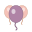

🎈 Balloon Attic Favicon Test
Favicon Status Check
Checking favicon status...
Available Favicon Files
Checking files...
Favicon Preview
This is how your favicon looks:

Next Steps
✅
favicon.svg
and
favicon.ico
are working
📱 For PNG files: Open
favicon-downloads.html
💾 Right-click each image and save as PNG with exact filenames
🔄 Hard refresh your website (Ctrl/Cmd + Shift + R) to see the favicon
🎈 Your balloon favicon should now appear in browser tabs!